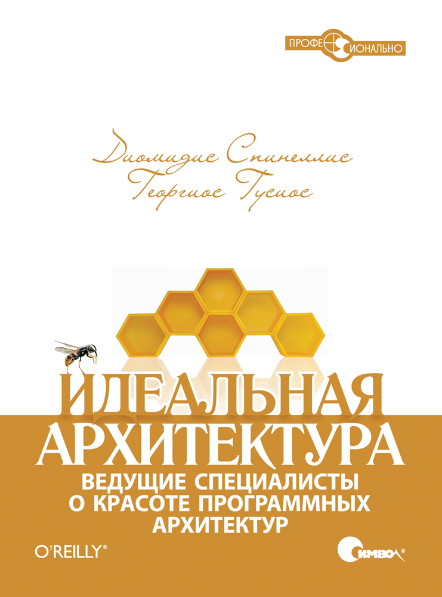

|
Nov 14, 2012
|
Т.к. я читаю много техлитературы, то периодически буду писать мысли о ней.
Книга поделена на 5 больших частей: про Архитектуру в целом, архитектуру в продакшине, на железе, приложений пользователя и ЯП. Сразу скажу что букв много аж 500 в страницах, много воды и откровенно запихнутого текста для объема. А из закона Архимеда мы знаем что больший объем вытесняет больше нашего бабла! Перевод местами тоже весьма неайс например “уборщик мусора”. Если не обращать на это внимание то есть главы которые доставляют и читаются на одном дыхании, потому что часто описывается ситуация с которой ты сам сталкивался и толкуется как нужно было поступить - это очень круто.
Советую прочитать главы “2 Повесть о двух системах”, 7 про виртуализацию, 3 про гэймдев и особенно доставляет 11 про Emacs (про архитектуру Emacs). Остальное я читал между строк и между абзацев, а иногда только номера страниц. Не советую читать книгу если нет опыта. Именно опыта проектирования и внедрения, а не рутины или написания сайтов визиток за две недели. Без опыта это будет не интересно, нес чем будет сравнивать и чтение превратится в усыпляющий процесс. Остальным один раз прочитать, вспомнить свои ошибки, прослезиться, усвоить и положить на полку, поэтому лучше брать PDF он значительно дешевле и не собирает пыль и еще бережет лес.